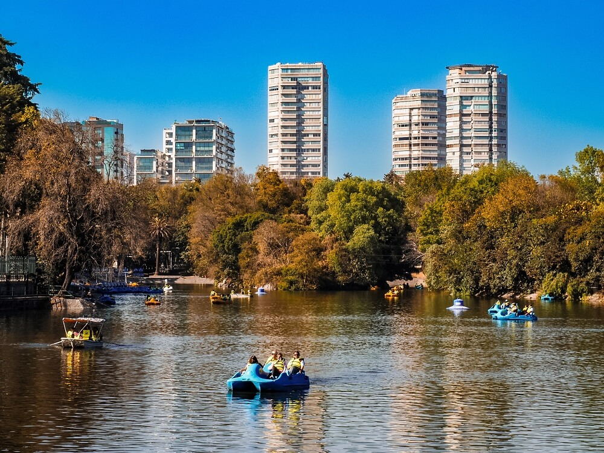

Chapultepec
El bosque de Chapultepec o Chapultepec es un parque urbano localizado en la alcaldía Miguel Hidalgo, en la Ciudad de México. Cuenta con una superficie de 810 hectarias. Está dividido en cuatro secciones y alberga algunos de los sitios turísticos más importantes de México. Cuenta con tres lagos artificiales, espacios deportivos y numerosas fuentes. Dada la antigüedad en su ocupación humana el bosque fue declarado zona arqueológica y contiene numerosos vestigios históricos y se han hallado cerca de 4 mil objetos arqueológicos y está incluido desde el 2001 en la lista indicativa de los bienes candidatos a ser reconocidos como Patrimonio de la Humanidad en México.